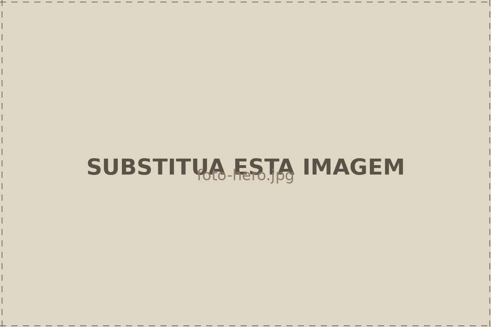
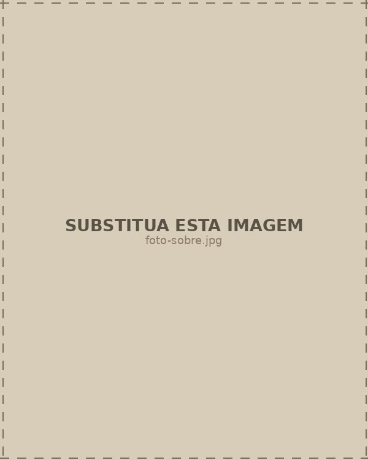
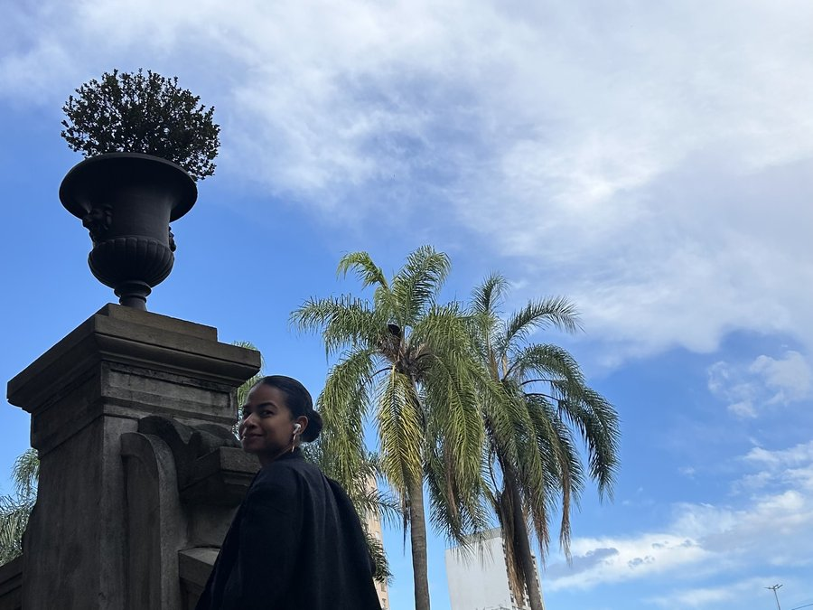
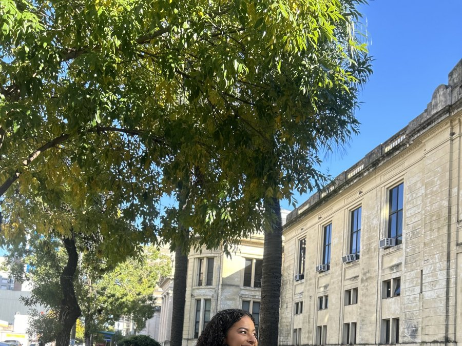
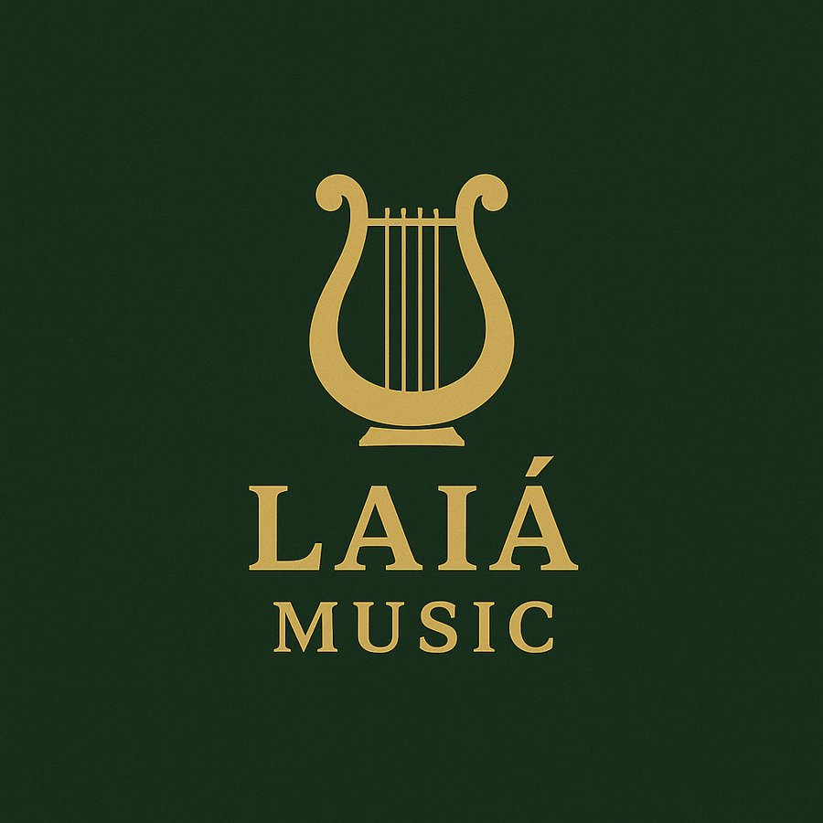
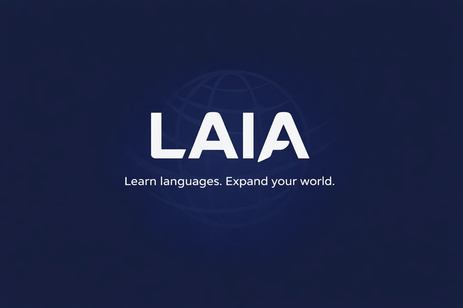

Bem-vindo ao meu cantinho da internet — onde a rotina de estudante de medicina, os projetos que construo e a vida lá fora se encontram.

Bem-estar de verdade, sem fórmula mágica — rotina, sono, treino e o que aprendo sobre o corpo estudando medicina.
O dia a dia entre o plantão e a vida: estilo, rotina e recomendações de quem circula entre a faculdade e o resto do mundo.

Roteiros de quem vive de mala pronta entre Rosário, São Paulo e o resto do mundo — os lugares que valem a pena.

Bastidores da graduação na Argentina, ciência, publicações e o caminho até a neurocirurgia.

